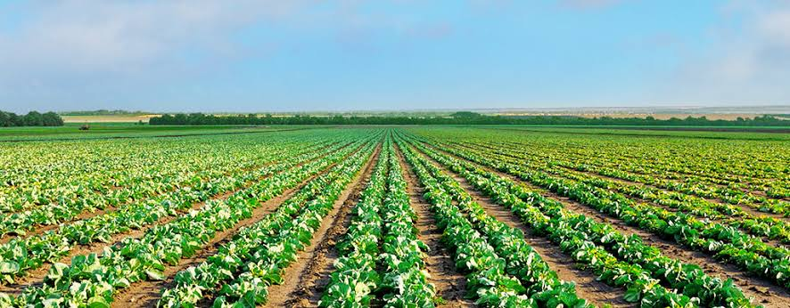
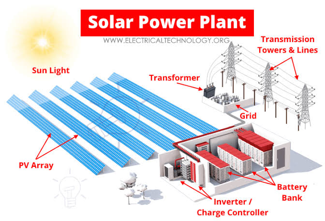
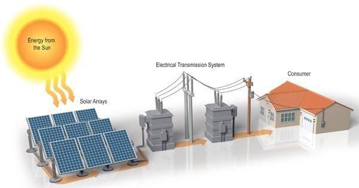
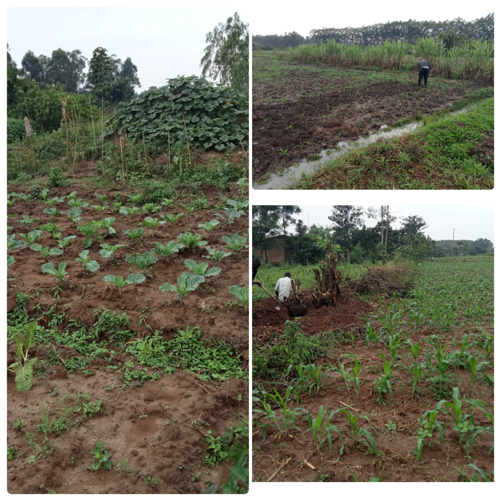
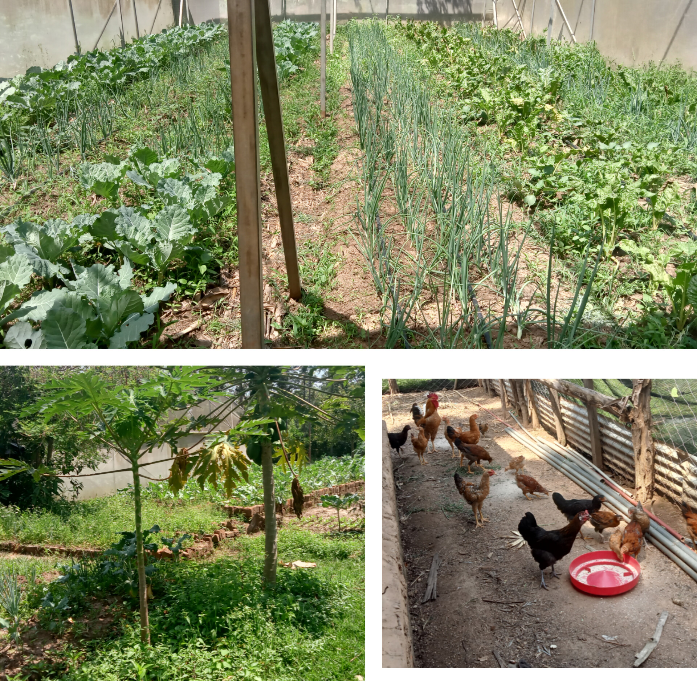
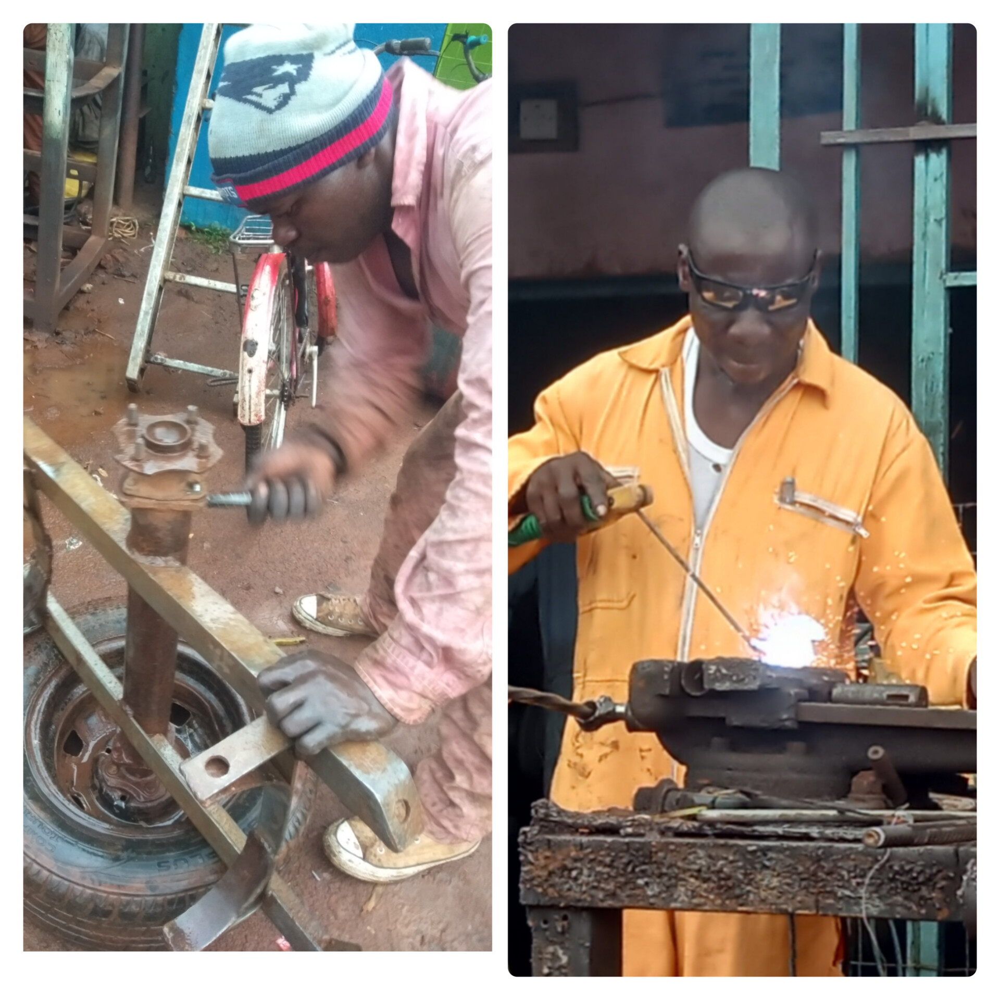
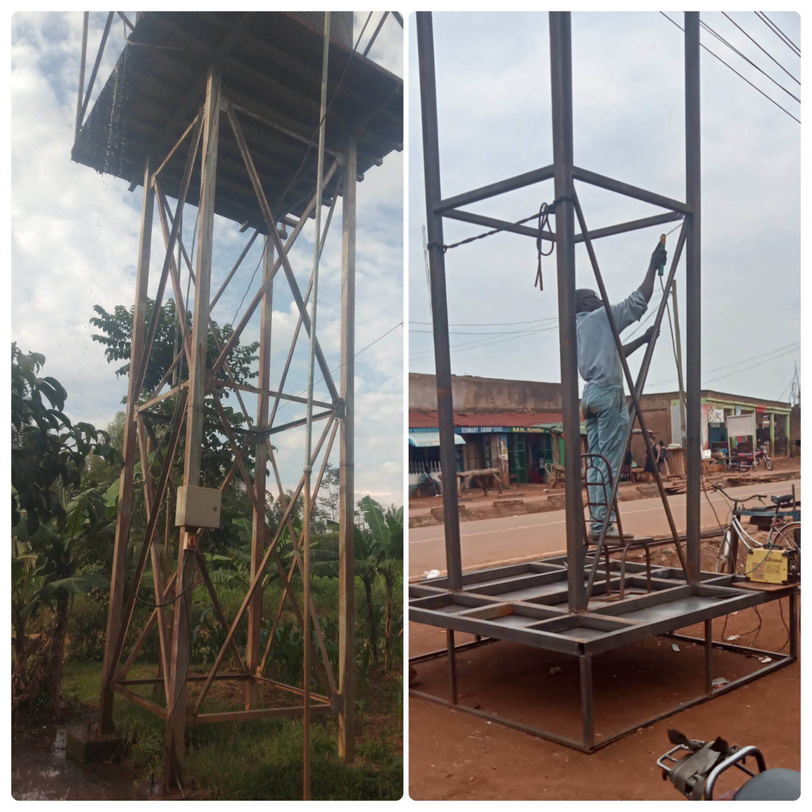
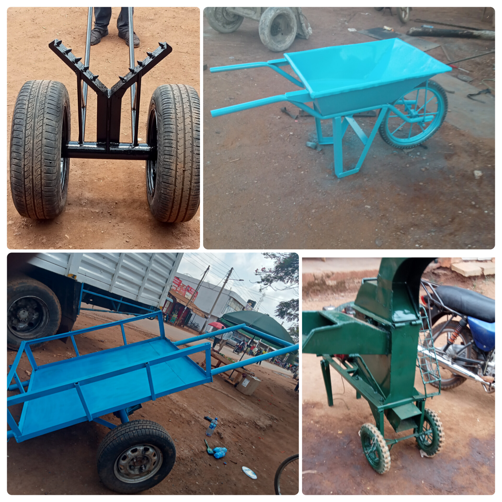
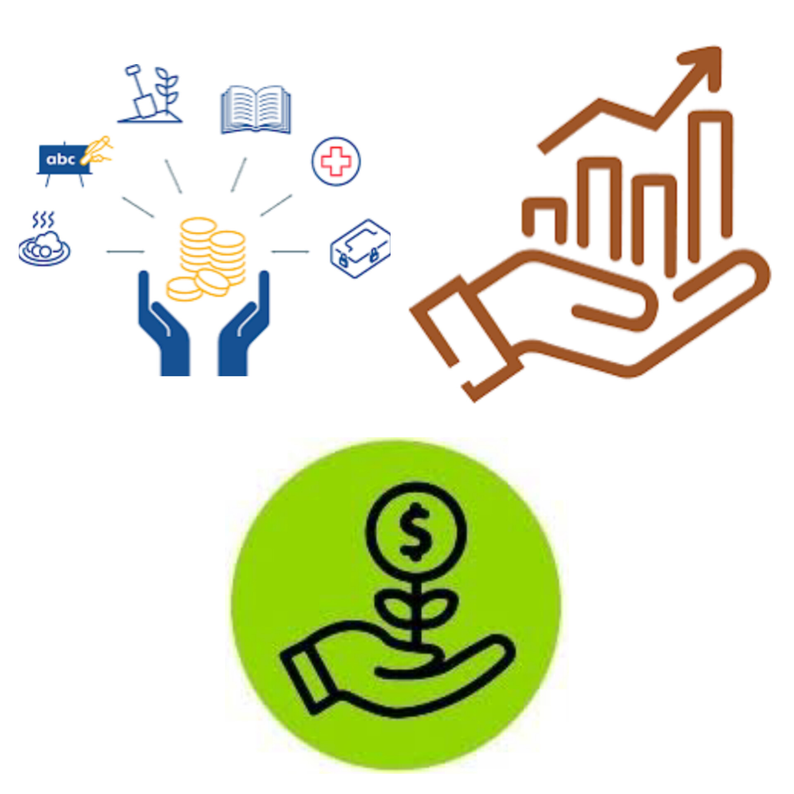

Vyema community Projects hub
Community empowerment projects
Proposed projects
In Africa widely used form of energy is the mains electricity.As much as it is widely available, the only challange is that it is not reliable.Most areas are prone to blackout which extend out weeks or even months.In turn our sensitive and power dependable projects are hugely affected.The fabrication facilities, water pumping facilities and even farmers with incubation facilities are affected.
Vyema has a vision to set up an Off-Grid-Solar-Power plant that will help counter the power problem in the community.
 1. sustainable agriculture
As a community initiative our main mission is to transform agriculture to secure a sustainable future for food, nature and economic stability for the community.We have invested and implemented various agricultural projects.
FarmsAs a community initiative we have put our focus in crop and vegetable production.We have two main running farms, Lumen Farm and Angorom Farm.
Main produce are mainly vegetables. Kales, Spinach, Onions, and many more.
Angorom farm(above) lumen farm2.Metal works and fabrication workshop.
The cost of implementing farm equipments are very high in our country and our vicinity, so we decided to come up with locally made farm tools and agricultural equipments.our metal work and fabrication workshop, "Palulu General Engineering and Fabrication" , is dedicated in designing and implementing cheaper and durable farm equipments.
Repairing, welding and fabricationAdditionally, apart from farm equipments, the workshop also offers various services within the community; Repairing and servicing of machinaries, Building water tank stands for water supply, school furniture and other metal and fabricated products.
Water tanks(above) pole transpoter(up-left), large-wheeled wheelbarrow, cart and chaff-cutter.3. A resource and technical training centre

The best way to uplift a community is by providing it with resources to cop with everyday challanges. The most valuable resource is "technical problem solving skill." Vyema has taken the initiative to avail technical education to the community. Lumen and Angrorom farm teach the people new farming techniques for maximum field yields. Additionally people are enlightened on the best crop choice to farm and the best seed selection.
The metal works and fabrication workshop provides technical training. Designing and fabrication techniques are provided. This help the community come up with cheaper and more reliable tools and equipments.
4. Community economic empowerment
Vyema help the community with financial advices guiding them to make good decision on their expenditure putting into concideration the majority in the community do not have formal employment.
Apart from the financial advices we provide, we also the people in starting and running small self-sustaining businesses to help them generate their income.